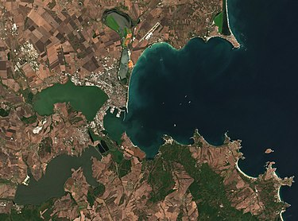
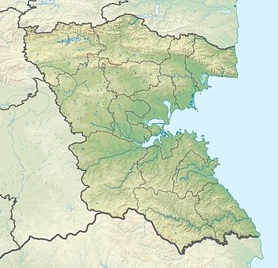

 Градът е разположен в източната част на Бургаската низина , която се намира на изток от Горнотракийската низина. Разположен в най-западната точка на Черно море, Бургас дава името на едноименния залив, който е най-големият и най-вдаденият в континента на българското Черноморие. Градът е заобиколен от 3 езера: Бургаско, Атанасовско и Мандренско на запад, североизток и югозапад, и на изток от Черно море. Между Бургаското и Мандренското езеро на височина 209 m се издига връх Върли бряг. Той е и най-високата точка на Бургас. Средната температура на въздуха през лятото достига 22,7 °C през месец юли, като максимални дневни температури над 20 °C се срещат и до ноември. Средният месечен брой слънчеви часове достига 328,6 през юли. През зимите континенталното влияние е видно, но те остават доста по-меки в сравнение с вътрешността на страната и са доста оскъдни откъм сняг. Средната температура на въздуха през зимата пада до 2,1 °C през януари. Средната годишна температура на въздуха е 12,3 °C. 